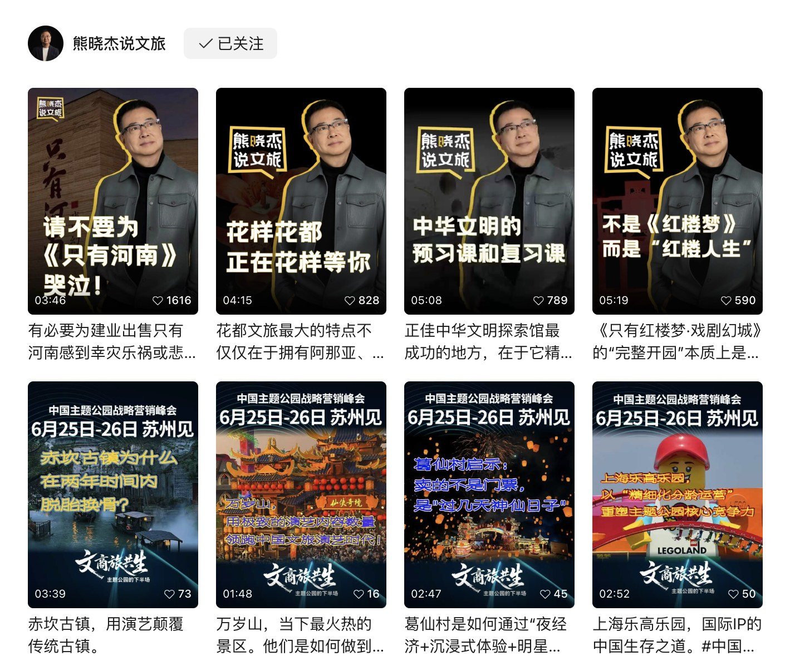

02
Founder IP · Content Operations
一个 IP
的长期主义。
项目背景
创始人 IP 最珍贵的是判断力和人格感，最难的是持续产出，以及在每个平台都找到合适的表达。
「熊晓杰说文旅」覆盖视频号、抖音、B站、小红书与小宇宙。不同平台的用户、节奏和内容偏好都不一样，但对外输出的价值观必须一致。此外，还需要从 0 到 1 搭建时代文旅编辑部的小红书账号。
我的工作
负责选题、文案、排期、剪辑与数据监控，维护多平台内容日历；定期撰写月度运营复盘与分析汇报；参与直播与峰会内容的二次传播，把一次长内容拆成可持续分发的短视频与图文。
在账号冷启动阶段，参与时代文旅编辑部小红书的定位、栏目与首批内容搭建。
关键动作
-
先建选题库，再谈爆款 把行业观察、政策变化、项目案例拆成可复用的选题母题，减少「今天发什么」的消耗。
-
一稿多平台改编 同一条核心观点，按平台重写开头、长度与呈现方式，而不是一键同步。
-
用数据看板做月度复盘 用 Excel 拉取多平台原始数据，对完播率与互动率归因，把复盘结论直接变成下一轮选题。
项目结果
8w+视频号单条最高播放
5000+单条最高获赞与收藏
10w+峰会系列视频播放总量
复盘
运营创始人 IP，本质上是在做「信任的复利」。单条爆款有运气成分，但稳定的选题机制、统一的表达和持续的数据复盘，能让好内容出现的概率变高。
注：本页保留项目层面的结果数据，不展示账号后台截图与客户敏感信息。
Next Project
Trendy Cattery 潮猫舍 →
返回运营能力